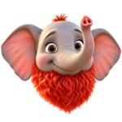

Libros y videos para disfrutar en familia.
Los superpoderes de Tilo son reconocer, nombrar y controlar las emociones. Practicamos notar las señales del cuerpo, decir qué sentimos y elegir cómo responder cuidándonos y cuidando a los demás.
Compartí las actividades con los chicos. No hay puntajes ni obligación de sentirse mejor. Escuchar o parar también vale.
En la respiración, inspiren y suelten el aire suavemente, a su ritmo. Pueden pausar o terminar cuando quieran.
Las historias son adaptaciones breves de los cinco libros de TILO. Las imágenes y el video fueron proporcionados por su creadora. La app no pide nombres, emails ni respuestas escritas y no guarda las elecciones. No ofrece terapia ni diagnósticos.